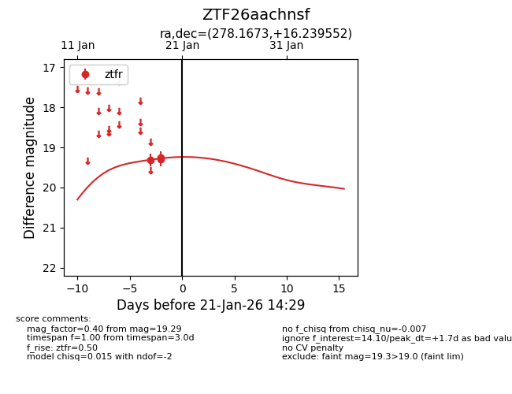
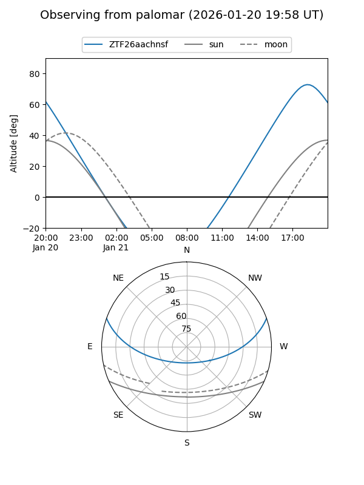

ZTF26aachnsf
Target ZTF26aachnsf at 2026-01-21 14:31
Aliases and brokers:
FINK: link
Lasair: link
ALeRCE: link
alt names
ZTF26aachnsf (ztf,fink_ztf)
Coordinates:
equatorial (ra, dec) = 278.1673,+16.23955
equatorial (HMS+DMS) = 18:32:40.15,+16:14:22.39
galactic (l, b) = (45.4856,+11.38592)
Flags:
Photometry:
last ztfr=19.29
3 ztfr detections
Lightcurve

Visibility


Additional plots